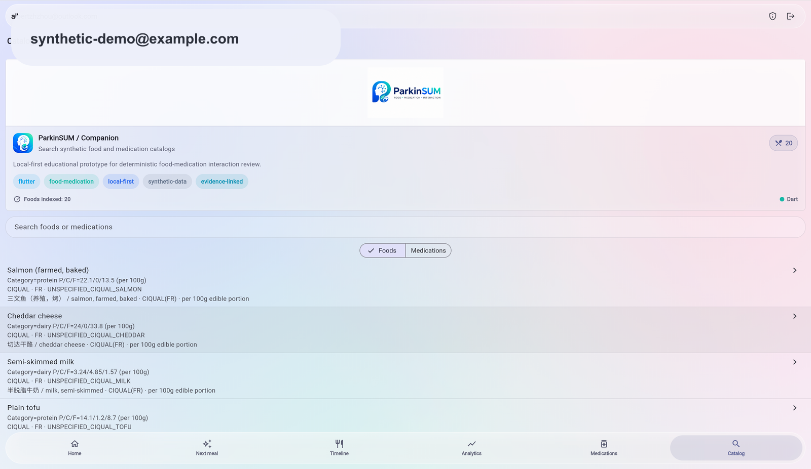
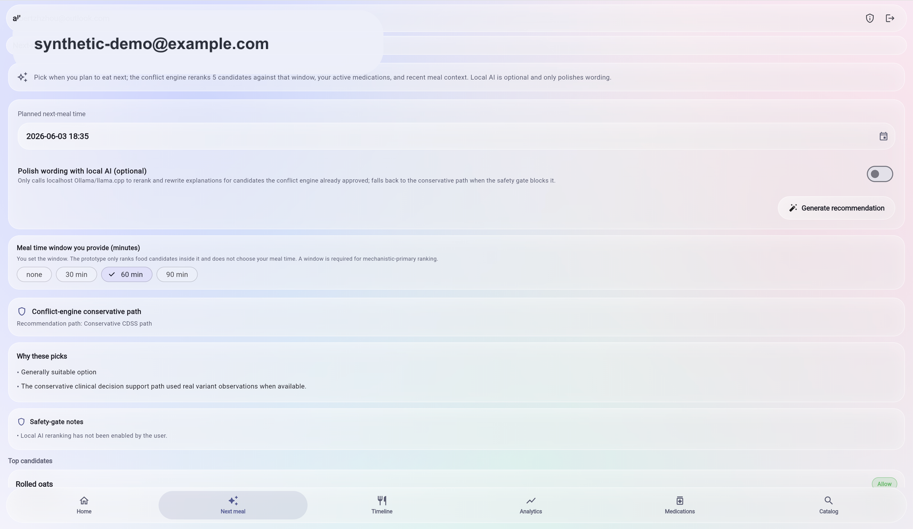
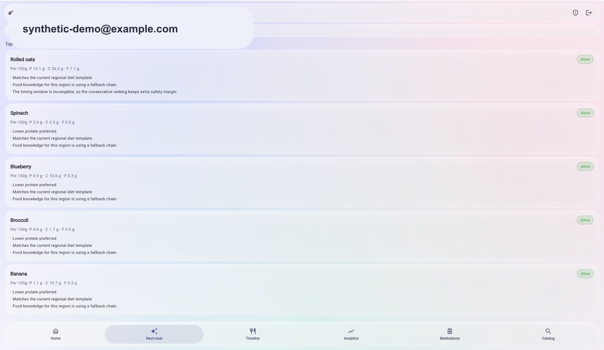
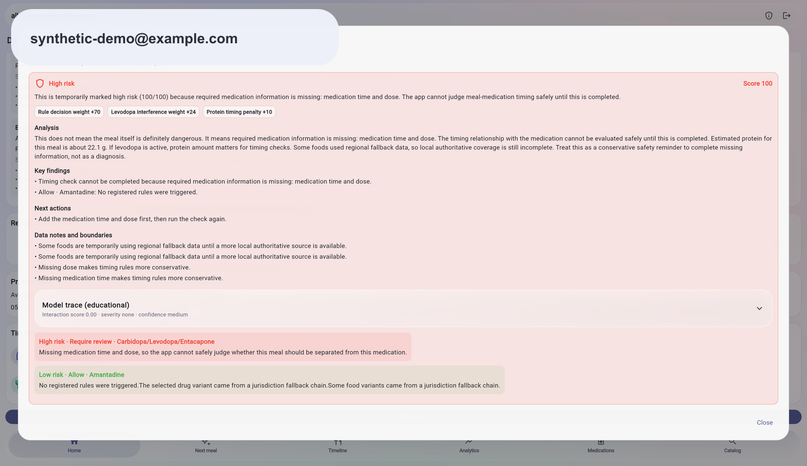
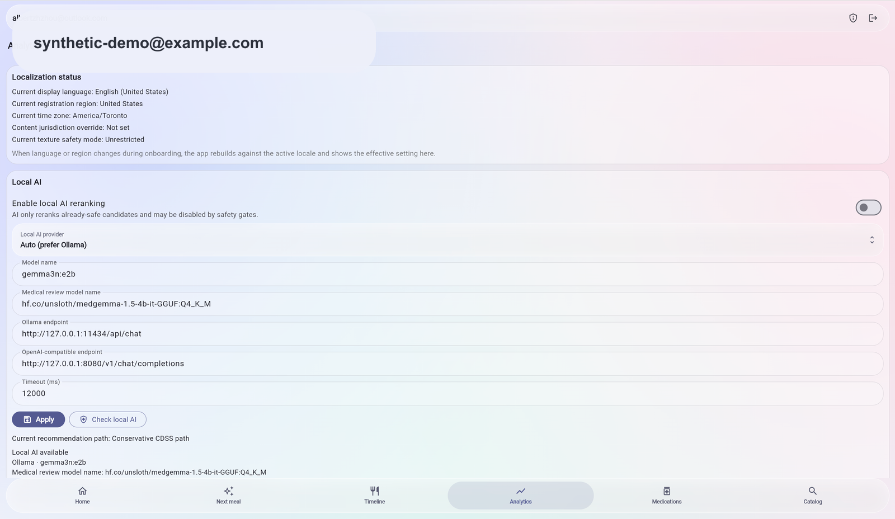

Meals, medication selections, and timeline entries.

30-second project demo
A local-first Flutter prototype for educational food-medication interaction awareness.
ParkinSUM combines synthetic meal logging, medication context, deterministic rule checks, and evidence-oriented explanations so a reviewer can see how the app reaches a conservative educational result.
Synthetic/demo data only. Not medical advice, not a medical device, and no clinical validation is claimed.

Rules stay inspectable and repeatable.
Scores, findings, limitations, and next-action text.
Real app flow
Four screens explain the app without reading the code.




System shape
The demo follows one inspectable data path.
-
Meal + medication context
Synthetic entries from the app timeline and catalog screens.
-
Local-first state
Public demos stay local and avoid real accounts or health records.
-
Rule engine
Deterministic checks produce conservative, reproducible outputs.
-
Evidence explanation
The UI shows what mattered, what is missing, and what is limited.
Demo delivery
Use the right demo format for the audience.
Available now
30-second website
Use this static Pages site for reviewers who need the project purpose, flow, and safety boundary immediately.
Release channelDemo APK
Publish Android artifacts only as clearly labeled demo/debug APKs from the GitHub Releases page.
Source runFlutter web demo
Build or run the app from source when the reviewer needs an interactive browser demo instead of screenshots.
Media policyShort video / GIF
A short recording is useful only after it renders correctly on GitHub and passes synthetic-data media checks.
Safety boundary
This is an educational software prototype.
ParkinSUM is for software architecture review, educational walkthroughs, and synthetic-data demonstrations. It must not be used for diagnosis, treatment, medication timing, dietary guidance, clinical decision-making, patient care, or emergency support.